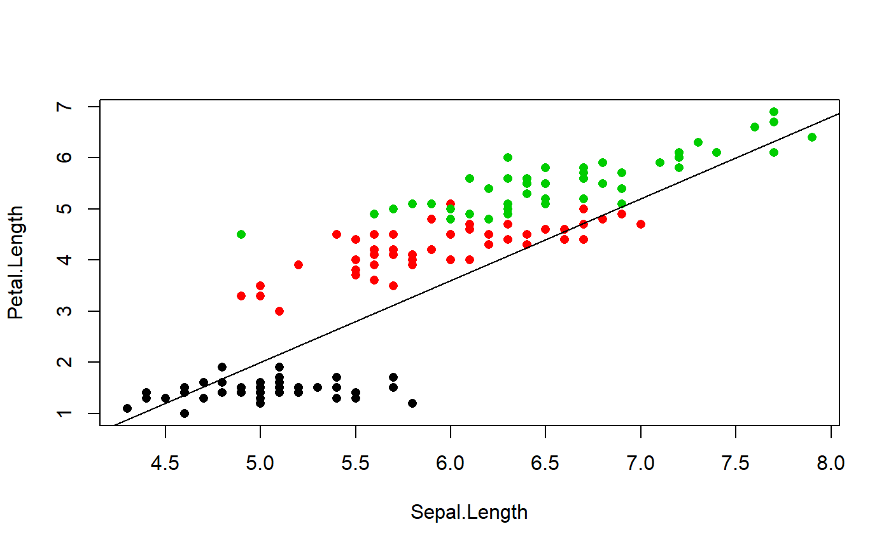
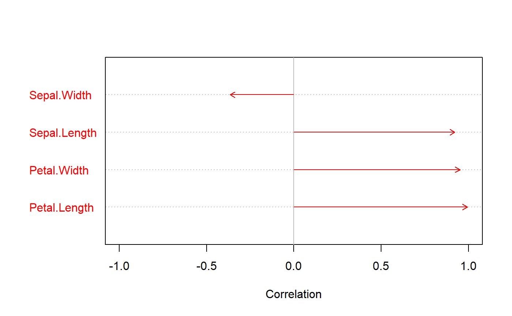

multtest.cor.RdPerforms correlation tests between one variable and a series of other variables, and corrects p-values.
multtest.cor(mult.var, uni.var, method = "pearson", p.method = "fdr", ordered = TRUE) # S3 method for multtest.cor plot(x, arrows = TRUE, main = NULL, pch = 16, cex = 1, col = c("red", "orange", "black"), labels = NULL, ...)
| mult.var | data frame containing a series of numeric variables. |
|---|---|
| uni.var | numeric variable (vector). |
| method | a character string indicating which correlation coefficient is to be computed. See help of |
| p.method | method for p-values correction. See help of |
| ordered | logical indicating if variables should be ordered based on correlation values. |
| x | object returned from |
| arrows | logical indicating if arrows should be plotted. If |
| main | optional title of the graph. |
| pch | symbol(s) used for points, when points are displayed (see |
| cex | size of points and labels (see help of |
| col | vector of three colors: first for variables with P < 0.05, second for variables with 0.05 < P < 0.1, third for variables with P > 0.1. Recycled if only one value. |
| labels | names of the variables. If |
| … | not used. |
data(iris) # Original coordinates plot(Petal.Length~Sepal.Length,pch=16,col=as.numeric(iris$Species),data=iris)# Coordinates on new axis new.coord <- coord.proj(iris[,c("Sepal.Length","Petal.Length")],1.6) # Correlation between the whole dataset and new coordinates mult.cor <- multtest.cor(iris[,1:4],new.coord) plot(mult.cor)